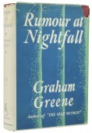

Emblem are always looking to buy rare books. We offer very competitive prices for appropriate books. All you need to do is contact us with details of the book or collection you are looking to sell. We will need to know the following information,
Author.
Title (exactly as it appears on the title page).
Publisher and publication date.
Edition (if known).
Brief description of the binding (cloth boards, leather-bound, with or lacking dustwrapper).
Description of the overall condition of the book, including any major defects.
If the book meets our requirements, we will contact you for more details.

Rumour at Nightfall written by Graham Greene
Selling Books
Emblem sells rare and collectable fiction and poetry. We are particularly interested in 18th and 19th century books, and have a world-renowned stock of latter 19th century women’s writing. Of particular interest are first editions, private press editions, and author signed copies. We also provide a restoration service, and consultancy on investment in rare books. We issue printed and illustrated catalogues of rare books twice a year. We also exhibit at book fairs in the UK, New Zealand, Canada and the USA.
Ulysses written by James Joyce
Valuing Books
If you possess books you wish to sell then a formal valuation the most appropriate course of action. Emblem undertakes written valuations for insurance purposes or personal interest. We can appraise a single books or collections.
If you wish to have a book valued, a free initial verbal assessment of whether the book is likely to have sufficient value to merit a full valuation is recommended. If you decide to go ahead with the valuation, Emblem will provide you with an estimate of the cost before the valuation is carried out in full. Fees for valuation work are charged at a half day rate of £300.